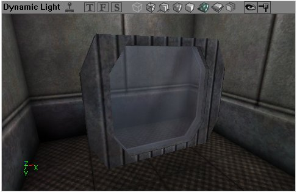

Making Windows
If you're looking for the old UT tutorial, it can be found here: Making Windows (UT)
Window tutorial for UT2003
I'll just cover the basics of windows creation: that is to say, how to create a glass-like material and how to make a window using it.
Creating a texture
You don't really need anything fancy, a very simple texture will do the trick. It doesn't even have to tile  What is more important is the alpha channel. It will determine how translucent the windows will be. Create a new mask. In PSP click on the new mask button, then hold CTRL+ALT+V to show it and CRTL+K to toggle mask editing.
What is more important is the alpha channel. It will determine how translucent the windows will be. Create a new mask. In PSP click on the new mask button, then hold CTRL+ALT+V to show it and CRTL+K to toggle mask editing.
![[fluidsurfaces-5]](images/fluidsurfaces-5.jpeg) In Paint Shop Pro the New Mask button is at the top of the layer box |
The white parts of the mask will be transparent, the black ones will be opaque. When you're satisfied with your alpha channel, store it inside the image (In Paint Shop Pro you have to use the Save in an alpha channel in the Mask menu), hide the mask and save your image (it has to be a .TGA file).
![[ut2k3windows1]](images/ut2k3windows1.jpeg) the texture and the alpha channel |
Creating the material
Open UnrealEd, import the texture you just created. You can import it into any package, but the "MyLevel" package is good, as it will cause the materials to be stored inside the level, so it will be easier to distribute your map.
Now you have to create a reflective material. Choose File → New and pick Combiner in the combo list. You can use any name you want for the material.
In the combiner's properties, set the first material to your use your glass texture. For the second material, use a TexEnvMap. Ideally it should match your level, but it won't be overly clear anyway so it needn't match exactly. There are a lot of these in CubeMaps.utx, or you can create your own. For the combiners operation, select CO_Alphablend_With_Mask from the CombineOperation combo list. The mask material defines the way the two material will blend. Use the glass texture once again (since it contains an alpha channel). You may have to set InvertMask to true. You should experiment with both settings to see which gives you the effect you desire.
Now we need to make a translucent version of that material. Create a new material, a Shader. Use the combiner you just created for the Diffuse slot and the glass texture for the Opacity slot.
![[ut2k3windows2]](images/ut2k3windows2.jpeg) You should have something like this. |
Creating the window
You could use the glass material on a regular brush but it's not the best way to do it, because the BSP takes more time to render. Use your red builder brush to create a rectangular window (128x128x4 for instance), select the glass shader and click on the Convert to Static Mesh button, name it Glass_128x128x4 and save it in MyLevel or in a custom package.
Now you have a ready-to-use window. You can still resize it with the DrawScale3D fields. Changes made to the static mesh will affect every instance in your level. Moreover, using a static mesh allows you to turn the windows into movers (to make them breakable).

The final result. |
Most of the time windows are too dark, you can fix that easily by setting the ScaleGlow value to something around 64 in the Display properties of your static meshes. Alternatively you can use the Self Illumination layer of the Shader material you created.